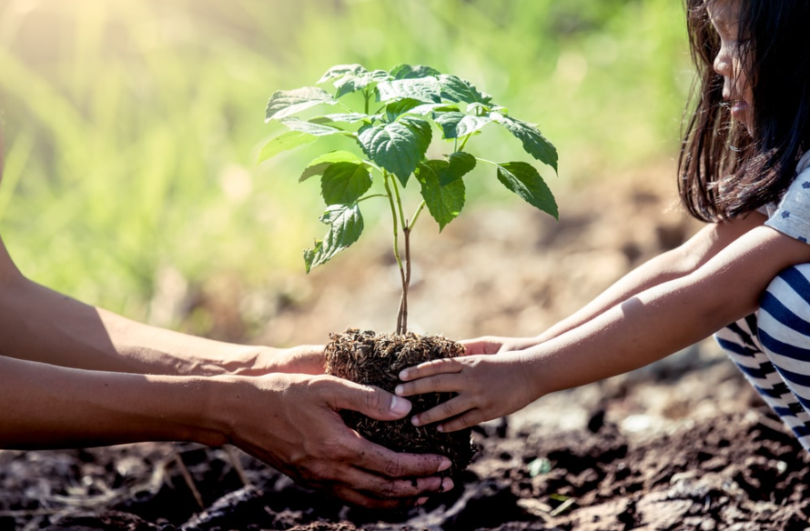

SDG 15: Life on Land is one of the United Nations Sustainable Development Goals. It focuses on the topic of protecting our terrestrial ecosystems. On how to protect, restore, and promote sustainable use of our terrestrial ecosystems, manage forests, combat desertification, reverse land degradation, and stop biodiversity loss. The goal is to sustain our terrestrial ecosystems.
Importance:
The importance of this SDG lies in our dependency on our land ecosystems. We humans depend on our environment to create and destroy. It provides us with the resources we need for our survival; while this is important for us, it is also important to our world. Terrestrial environments are a huge part of the Earth's natural balance; they regulate our climate and support biodiversity. Without them, human life and the earth will suffer greatly.
The Problems:
Amount of Tree Cover Lost Per 3 years:
Mha = Million Hectares
Year
Area
Percentage
2015
6.0 Mha
~96%
2018
3.8 Mha
~94%
2021
3.9 Mha
~93%
2024
6.6 Mha
~91%

Author's goal:
This is where I come in. I’m here to inform you about the problems we humans need to face so we can take the next step toward truly coexisting with our planet. I want to inspire people to actively support these projects and help spread not just awareness, but real motivation to get involved. I know most people are already informed about this topic, but I doubt many actually care, even in my own household, I don’t see anyone truly paying attention to the environment until it affects the bills. So, I’m here to try and make you care about what’s happening to the world, and I hope this website can inspire others to do the same.
Call to Action!
So what are you waiting for? Take a step outside, breathe in some of that air and let's save our environment one tree at a time, because our problem is not the lack of knowledge or power it’s the lack of motivation.